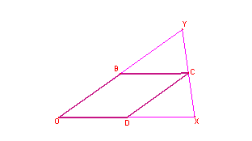

Problema 325
Sea un triángulo O X Y. Construir el paralelogramo OBCD cuyos lados
están sobre las rectas OX OY únicamente con la ayuda del punto medio de dos
puntos.
Laborde, C. y Vergnaud, G. (1994): L’apprentissage et l’enseignement des
mathématiques. En Vergnaud, G. (Ed.) Apprentissages et didactiques, oú en
est-on?. Paris, Hachette (pag
90).Incidencia de la funcionalidades de los logicieles
sobre los aprendizajes.
Solución de Maite Peña Alcaraz:

Basta unir los tres puntos medios de cada lado con O para obtener un paralelogramo, ya que por el teorema de Thales, BC es paralelo a OX y por tanto a OD y OB a CD.